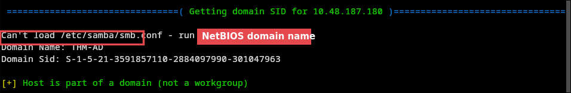

A guided room on a single Domain Controller. One account without Kerberos pre-auth leads to a readable share, a backup account with replication rights, and every hash in the domain.
Written with the help of AI from my own engagement notes. Read the raw, unedited notes → · Read the story on Medium ↗
| # | From → To | Technique | Misconfiguration |
|---|---|---|---|
| 1 | anonymous → svc-admin | Kerberos user enum, AS-REP roast, offline crack | Pre-auth disabled on svc-admin; crackable password |
| 2 | svc-admin → backup | Read backup share, decode base64 | Credentials stored in a share, base64 is not encryption |
| 3 | backup → every hash | DCSync (DRSUAPI) with secretsdump | backup holds directory replication rights |
| 4 | hash → Administrator | Pass-the-hash over WinRM | NTLM hashes usable directly for logon |
The room is split into guided tasks, but each step still follows the same loop: what I knew → what I tried → what it told me. The lab IP changed once mid-engagement (10.48.187.180 → 10.48.149.29) when the VM was redeployed.
rustscan -a <target> -- -sC -sV -Aspookysec.local, host AttacktiveDirectory.spookysec.local. SMB signing required.enum4linux <target>
kerbrute userenum -d spookysec.local --dc AttacktiveDirectory.spookysec.local users.txtjames, svc-admin, robin, darkstar, administrator, backup, paradox. Kerbrute also flagged that svc-admin has no pre-auth required and dumped its AS-REP on the spot.Without pre-auth, the KDC returns an AS-REP encrypted with the account's password-derived key to anyone who asks. The captured hash starts with $krb5asrep$23$, which is etype 23 (RC4), hashcat mode 18200:
hashcat -m 18200 hash.txt passwordlist.txt -o crack_hash.txt # → svc-admin's passwordsmbclient -L //spookysec.local -U 'svc-admin%<pw>'backup is the only non-default one, and it held backup_credentials.txt: one base64 string that decodes to backup@spookysec.local:<pw>.backup on a DC is often given replication rights so it can copy directory data, which is exactly what DCSync needs.secretsdump.py spookysec.local/backup:'<pw>'@<target>The registry route failed first (RemoteOperations failed: rpc_s_access_denied, since backup isn't a local admin). Secretsdump then fell back to DRSUAPI replication and returned the NT hash and Kerberos keys of every account, Administrator and krbtgt included.
a-spooks has the same NT hash as Administrator, and skidy and breakerofthings share one too. Identical NT hashes mean identical passwords.evil-winrm -i <target> -u Administrator -H <hash>Shell as Administrator without ever knowing the password. From there I pulled the three flags from the svc-admin, backup and Administrator desktops.
| Technique | ID | Where |
|---|---|---|
| Network Service Discovery | T1046 | rustscan / nmap |
| Account Discovery: Domain Account | T1087.002 | enum4linux, kerbrute |
| Steal or Forge Kerberos Tickets: AS-REP Roasting | T1558.004 | svc-admin |
| Brute Force: Password Cracking | T1110.002 | hashcat -m 18200 |
| Unsecured Credentials: Credentials In Files | T1552.001 | backup_credentials.txt |
| OS Credential Dumping: DCSync | T1003.006 | secretsdump (DRSUAPI) |
| Use Alternate Auth Material: Pass the Hash | T1550.002 | evil-winrm -H |
| Remote Services: WinRM | T1021.006 | evil-winrm |
| Finding | Risk | Remediation |
|---|---|---|
Pre-auth disabled on svc-admin | Offline password cracking by anyone | Require Kerberos pre-auth on every account; long random passwords for service accounts |
| Credentials in an SMB share | Credential exposure | Remove the file; store secrets in a vault; base64 is encoding, not protection |
backup holds replication rights | DCSync of the whole domain | Grant Replicating Directory Changes (All) only to DCs; alert on DRSUAPI requests from non-DC hosts |
| Shared passwords (identical NT hashes) | One crack compromises several accounts | Unique passwords per account; separate admin accounts with LAPS-style rotation |
| Hashes usable for logon | Pass-the-hash | Restrict NTLM, use Credential Guard, limit WinRM to admin hosts |
backup pointed straight at replication rights.